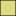
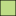
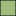
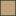
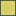
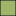
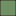

<!doctype html>
<html lang="en">
    <head>
        <meta charset="utf-8">
        <meta http-equiv="X-UA-Compatible" content="IE=edge">
        <meta name="viewport" content="initial-scale=1,user-scalable=no,maximum-scale=1,width=device-width">
        <meta name="mobile-web-app-capable" content="yes">
        <meta name="apple-mobile-web-app-capable" content="yes">
        <link rel="stylesheet" href="css/leaflet.css">
        <link rel="stylesheet" href="css/qgis2web.css">
        <style>
        html, body, #map {
            width: 100%;
            height: 100%;
            padding: 0;
            margin: 0;
        }
        </style>
        <title></title>
    </head>
    <body>
        <div id="map">
        </div>
        <script src="js/qgis2web_expressions.js"></script>
        <script src="js/leaflet.js"></script>
        <script src="js/leaflet.rotatedMarker.js"></script>
        <script src="js/leaflet.pattern.js"></script>
        <script src="js/leaflet-hash.js"></script>
        <script src="js/Autolinker.min.js"></script>
        <script src="js/rbush.min.js"></script>
        <script src="js/labelgun.min.js"></script>
        <script src="js/labels.js"></script>
        <script src="data/ArbolesperkmporComuna_1.js"></script>
        <script>
        var highlightLayer;
        function highlightFeature(e) {
            highlightLayer = e.target;

            if (e.target.feature.geometry.type === 'LineString') {
              highlightLayer.setStyle({
                color: '#ffff00',
              });
            } else {
              highlightLayer.setStyle({
                color: "#ff0000",
				weight: 3
              });
            }
        }
        var map = L.map('map', {
            zoomControl:true, maxZoom:28, minZoom:1
        }).fitBounds([[-34.694677149,-58.5498527256],[-34.5237043916,-58.3109051304]]);
        var hash = new L.Hash(map);
        map.attributionControl.addAttribution('<a href="https://github.com/tomchadwin/qgis2web" target="_blank">qgis2web</a>');
        var bounds_group = new L.featureGroup([]);
        var basemap0 = L.tileLayer('http://{s}.www.toolserver.org/tiles/bw-mapnik/{z}/{x}/{y}.png', {
            attribution: '&copy; <a href="http://openstreetmap.org">OpenStreetMap</a> contributors, <a href="http://creativecommons.org/licenses/by-sa/2.0/">CC-BY-SA</a>',
            maxZoom: 28
        });
        basemap0.addTo(map);
        function setBounds() {
        }
        var img_Arboladopublicomapadecalor_0 = 'data/Arboladopublicomapadecalor_0.png';
        var img_bounds_Arboladopublicomapadecalor_0 = [[-34.7012120032,-58.5361497532],[-34.5319927509,-58.3365170889]];
        var overlay_Arboladopublicomapadecalor_0 = new L.imageOverlay(img_Arboladopublicomapadecalor_0, img_bounds_Arboladopublicomapadecalor_0);
        bounds_group.addLayer(overlay_Arboladopublicomapadecalor_0);
        map.addLayer(overlay_Arboladopublicomapadecalor_0);
        function pop_ArbolesperkmporComuna_1(feature, layer) {
            layer.on({
                mouseout: function(e) {
                    for (i in e.target._eventParents) {
                        e.target._eventParents[i].resetStyle(e.target);
                    }
                },
                mouseover: highlightFeature,
            });
            var popupContent = '<table>\
                    <tr>\
                        <th scope="row">Comuna</th>\
                        <td>' + (feature.properties['COMUNAS'] !== null ? Autolinker.link(String(feature.properties['COMUNAS'])) : '') + '</td>\
                    </tr>\
                    <tr>\
                        <th scope="row">Area (m²)</th>\
                        <td>' + (feature.properties['area_str'] !== null ? Autolinker.link(String(feature.properties['area_str'])) : '') + '</td>\
                    </tr>\
                    <tr>\
                        <th scope="row">Cantidad de arboles</th>\
                        <td>' + (feature.properties['arboles_st'] !== null ? Autolinker.link(String(feature.properties['arboles_st'])) : '') + '</td>\
                    </tr>\
                    <tr>\
                        <th scope="row">Densidad  de arbolado (arboles/ km²)</th>\
                        <td>' + (feature.properties['arb_km2_st'] !== null ? Autolinker.link(String(feature.properties['arb_km2_st'])) : '') + '</td>\
                    </tr>\
                </table>';
            layer.bindPopup(popupContent, {maxHeight: 400});
        }

        function style_ArbolesperkmporComuna_1_0(feature) {
            if (feature.properties['q2wHide_arb_pkm2'] >= 1127.000000 && feature.properties['q2wHide_arb_pkm2'] <= 1500.000000 ) {
                return {
                pane: 'pane_ArbolesperkmporComuna_1',
                opacity: 1,
                color: 'rgba(0,0,0,1.0)',
                dashArray: '',
                lineCap: 'butt',
                lineJoin: 'miter',
                weight: 1.0, 
                fill: true,
                fillOpacity: 1,
                fillColor: 'rgba(238,188,79,0.501960784314)',
            }
            }
            if (feature.properties['q2wHide_arb_pkm2'] >= 1500.000000 && feature.properties['q2wHide_arb_pkm2'] <= 2000.000000 ) {
                return {
                pane: 'pane_ArbolesperkmporComuna_1',
                opacity: 1,
                color: 'rgba(0,0,0,1.0)',
                dashArray: '',
                lineCap: 'butt',
                lineJoin: 'miter',
                weight: 1.0, 
                fill: true,
                fillOpacity: 1,
                fillColor: 'rgba(192,183,3,0.501960784314)',
            }
            }
            if (feature.properties['q2wHide_arb_pkm2'] >= 2000.000000 && feature.properties['q2wHide_arb_pkm2'] <= 2500.000000 ) {
                return {
                pane: 'pane_ArbolesperkmporComuna_1',
                opacity: 1,
                color: 'rgba(0,0,0,1.0)',
                dashArray: '',
                lineCap: 'butt',
                lineJoin: 'miter',
                weight: 1.0, 
                fill: true,
                fillOpacity: 1,
                fillColor: 'rgba(128,188,15,0.501960784314)',
            }
            }
            if (feature.properties['q2wHide_arb_pkm2'] >= 2500.000000 && feature.properties['q2wHide_arb_pkm2'] <= 3000.000000 ) {
                return {
                pane: 'pane_ArbolesperkmporComuna_1',
                opacity: 1,
                color: 'rgba(0,0,0,1.0)',
                dashArray: '',
                lineCap: 'butt',
                lineJoin: 'miter',
                weight: 1.0, 
                fill: true,
                fillOpacity: 1,
                fillColor: 'rgba(69,123,2,0.501960784314)',
            }
            }
        }
        map.createPane('pane_ArbolesperkmporComuna_1');
        map.getPane('pane_ArbolesperkmporComuna_1').style.zIndex = 401;
        map.getPane('pane_ArbolesperkmporComuna_1').style['mix-blend-mode'] = 'normal';
        var layer_ArbolesperkmporComuna_1 = new L.geoJson(json_ArbolesperkmporComuna_1, {
            attribution: '<a href=""></a>',
            pane: 'pane_ArbolesperkmporComuna_1',
            onEachFeature: pop_ArbolesperkmporComuna_1,
            style: style_ArbolesperkmporComuna_1_0,
        });
        bounds_group.addLayer(layer_ArbolesperkmporComuna_1);
        map.addLayer(layer_ArbolesperkmporComuna_1);
        var baseMaps = {};
        L.control.layers({'Arboles por km² por Comuna<br /><table><tr><td style="text-align: center;"></td><td>hasta 1500 </td></tr><tr><td style="text-align: center;"></td><td> 1500 - 2000 </td></tr><tr><td style="text-align: center;"></td><td> 2000 - 2500 </td></tr><tr><td style="text-align: center;"></td><td> 2500+</td></tr></table>': layer_ArbolesperkmporComuna_1,'Arbolado público - mapa de calor<br /><table><tr><td style="text-align: center;"></td><td>1 - 10 arboles dentro de radio 100 m</td></tr><tr><td style="text-align: center;"></td><td> 10 - 20 </td></tr><tr><td style="text-align: center;"></td><td> 20 - 40 </td></tr><tr><td style="text-align: center;"></td><td> 40 - 60</td></tr><tr><td style="text-align: center;"></td><td> 60+</td></tr></table><p>Fuente: Ministerio de Ambiente y Espacio Público<br>SS Mantenimiento del Espacio Público<br>DG Arbolado': overlay_Arboladopublicomapadecalor_0,},baseMaps,{collapsed:false}).addTo(map);
        setBounds();
        var i = 0;
        layer_ArbolesperkmporComuna_1.eachLayer(function(layer) {
            var context = {
                feature: layer.feature,
                variables: {}
            };
            layer.bindTooltip((layer.feature.properties['q2wHide_comuna_str'] !== null?String('<div style="color: #1b3704; font-size: 10pt; font-weight: bold; font-family: \'Tahoma\', sans-serif;">' + layer.feature.properties['q2wHide_comuna_str']) + '</div>':''), {permanent: true, offset: [-0, -16], className: 'css_ArbolesperkmporComuna_1'});
            labels.push(layer);
            totalMarkers += 1;
              layer.added = true;
              addLabel(layer, i);
              i++;
        });
        L.ImageOverlay.include({
            getBounds: function () {
                return this._bounds;
            }
        });
        resetLabels([layer_ArbolesperkmporComuna_1]);
        map.on("zoomend", function(){
            resetLabels([layer_ArbolesperkmporComuna_1]);
        });
        map.on("layeradd", function(){
            resetLabels([layer_ArbolesperkmporComuna_1]);
        });
        map.on("layerremove", function(){
            resetLabels([layer_ArbolesperkmporComuna_1]);
        });
		L.control.scale({maxWidth:200,imperial:false}).addTo(map);		
		L.Control.Watermark = L.Control.extend({
		onAdd: function(map) {
        var img = L.DomUtil.create('img');
        img.src = 'images/north1.svg';
        img.style.width = '50px';
		img.style.opacity = '0.7';
        return img;
		}});
		L.control.watermark = function(opts) {
		return new L.Control.Watermark(opts);
		}
		L.control.watermark({ position: 'bottomleft' }).addTo(map);
        </script>
    </body>
</html>
